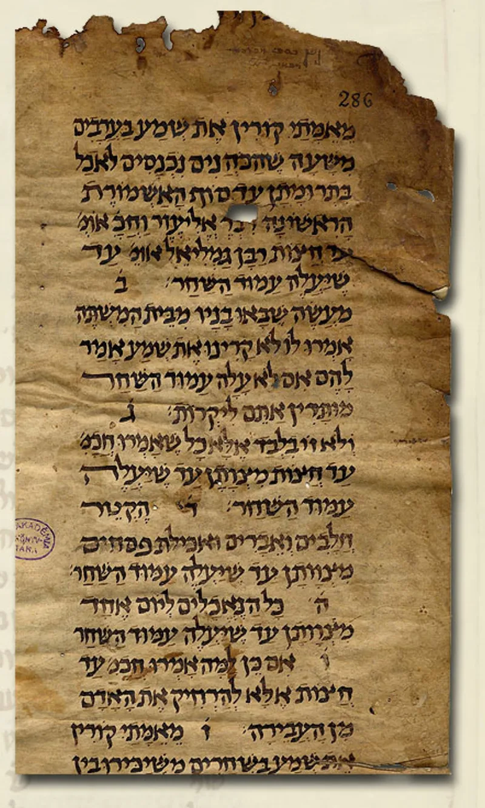
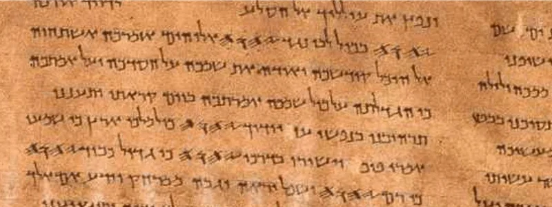

6,236 verses, one loose quotation of the Bible
UnrefutedNo good counter-argument has been published by Muslim scholars.
The claim and the gap
The Quran says it confirms the Torah and the Gospel (Quran 2:97; 3:3; 5:48; 46:12). Across 6,236 verses, it never quotes them.
There is no place where it cites a line of Isaiah or Matthew and says: this is what I confirm.
The one near-exception
Quran 21:105 says "We wrote in the Zabur... My righteous servants shall inherit the earth." That matches Psalm 37:29.
It is one loose citation, and it is the only one.
What it does contain instead
Biblical stories arrive through later Jewish and Christian retellings. Cain's raven parallels Pirke de-Rabbi Eliezer (Quran 5:31) — though PRE is usually dated to the 8th-9th century, possibly after Islam, which would reverse the direction of borrowing for that one example.
Abraham in the furnace comes from midrash (21:68-69). Mary is given Miriam's family (19:28).
Compare the New Testament, which quotes the Old Testament about 300 times, by name.
The Muslim answer, at full strength
Islamweb fatwa 367270 and Ibn Kathir on 3:3 answer this. The Quran is fresh revelation, not a commentary.
Musaddiq means it confirms the divine origin and core message of the earlier books, not their surviving letter. It does engage them.
Quran 21:105 names the Psalms and gets it right. Quran 7:157 says Muhammad is written in the Torah and Gospel.
Quran 48:29 points to a parable in the Gospel. The audience was largely pagan Meccans, and no written Arabic Bible existed to quote.
How strong is this argument?
Strong for you. Nobody disputes the fact; the replies only explain it.
Sidney Griffith's work confirms there was no Arabic Bible before Islam, so the knowledge was oral and preached. Sahih al-Bukhari 3 names Waraqa ibn Nawfal, Khadija's Christian cousin, who "used to write the Gospel in Arabic." And Quran 7:157 sharpens it: fourteen centuries on, nobody has produced the passage.
What to say
"Your book says it confirms mine. Could you show me one line of mine that it quotes?"



How they answer this — at its strongest
They say the Quran confirms the message of those books, so it need not quote them.
Islamweb fatwa 367270 and Ibn Kathir on 3:3 answer in four parts. First, the Quran is not a commentary but fresh revelation from the same source. Musaddiq means it confirms where the earlier books came from, and their core message — tawhid, God's oneness, judgment, the prophets. It does not confirm their surviving letter. So quotation is neither promised nor needed.
Second, it does engage biblical content. Quran 21:105 names the Psalms and gets it right. Quran 7:157 says Muhammad is written with them in the Torah and the Gospel. Quran 48:29 restates the seed parable as its likeness in the Gospel.
Third, an argument from silence is weak. The audience was mostly pagan Meccans, and long quotation of books nobody had in Arabic would serve no purpose. Fourth, retelling with change is the Quran's stated method (12:3). So a gap between it and tellings shaped by midrash, the later Jewish commentary, is correction rather than error.
The verdict
Strong for you: nobody disputes the gap, and the replies only explain it.
The core fact is not disputed. There are no word-for-word quotations of Torah or Gospel text in the whole Quran, and one loose Psalm citation. The replies explain why that might be acceptable. None of them denies that it is so.
And the explanations strain against the Quran's own stance. It stakes its truth on standing in line with earlier scripture (10:94; 5:47). Yet it shows no direct knowledge of either text, while showing close knowledge of later legend.
The 7:157 counter-example sharpens the problem. The Quran asserts that Muhammad is written in books it never quotes, and fourteen centuries of defence have not produced the passage. Sidney Griffith's finding is the plain explanation, sitting in the open.
Sources
- Sidney Griffith, The Bible in Arabic (Princeton, 2013)
- William Campbell — 'What the Qur'an Says About the Bible'
- Zabur — the 21:105/Psalm 37:29 correspondence
- Islamweb Fatwa 367270